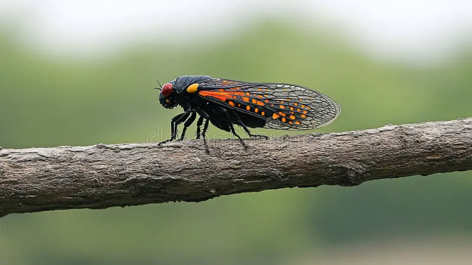

CIGARRA NEGRA Y ESCARLATA
Huechys sanguinea

Su coloración roja brillante y negra emula el aposematismo de insectos verdaderamente venenosos o de sabor desagradable, lo que disuade los ataques.
- Nombre científico: Huechys sanguinea
- Mimetismo: Coloración roja brillante y negra que emula señales de advertencia de insectos venenosos o de sabor desagradable.
- Hábitat: Zonas boscosas, matorrales y áreas tropicales o subtropicales del sur y sudeste de Asia.
- Sentido: Visión.
- Uso: Supervivencia.
- Función: Advertir y pretender.